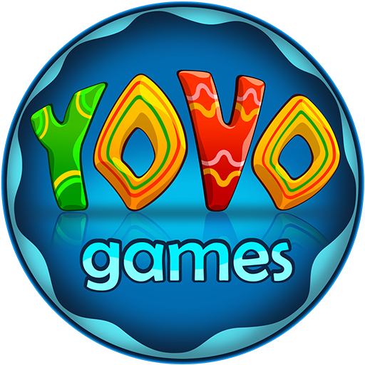

1984 ♐
Kiev City
Education:
Hotel Restaurant Manager (2001 - 2005)
IT Step - Unity (2014 - 2016) On the course I studied Unity and C#.
IT Step - Designer (2018 - 2020) Studied on the course Photoshop, illustrator, Premiere Pro, AutoCad, Maya, 3dMax
Work experience:
From 2001 to 2008 he worked in the restaurant business (cook, bartender, waiter)
From 2008 to 2016, he opened and was the owner of a small chain of sushi bars (3 establishments) and a children's clothing store.
In the field of IT since 10.01.2017. in company  until now
As a programmer in this company from 01/10/2017 to 2018.
Responsibilities included the development of games (for children) for mobile devices.
One
programmer (s), artist and animator participated in the development of the projects.
From 2018 to June 17, 2020, he held the position of a manager.
Opened an office in Kiev. Was engaged in the recruitment of staff. Managed the development of projects
(up to five at a time).
A game designer, artist, animator and programmer worked on each project.
Responsibilities included control of all stages of development before release, approval of design
documents, art reception, animation reception and code control.
Also, in his free time, he implemented his projects